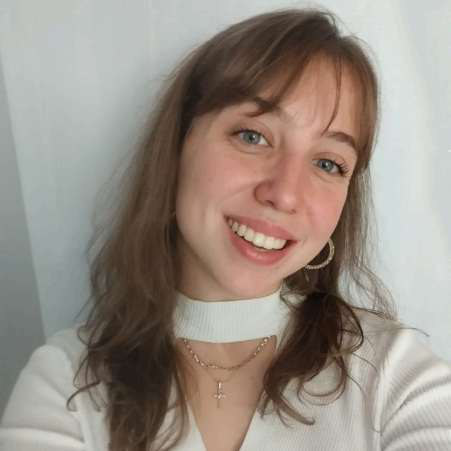

Elizabeth Koleva
I bridge advanced computing and business strategy. As an HPC Software Engineer at Discoverer, Bulgaria’s petascale supercomputer, and an AI Engineer at BRAIN++, the national AI Factory, I build systems that move from research into real deployment, including a production knowledge-management platform delivered from scratch to pilot. With degrees in Computer Science and Business Economics, I assess both the technical architecture and the business case. My goal is turning “deep tech” into scalable business assets: AI and HPC solutions that create measurable value for organisations and strengthen the regional innovation ecosystem. Having graduated from the EUMaster4HPC double-degree programme in 2026, I am now preparing to begin a PhD.
Experience
Sofia, Bulgaria
AI Engineer - Agentic Workflow Management and Deployment
- Sole developer of the BRAIN++ KMP/CRM platform, taken from scratch to a working proof of concept ready for user onboarding - PostgreSQL data model, application logic, Google OAuth authentication, and issue triage across the platform
- Own the pilot deployment end-to-end on VPN-only infrastructure: internal DNS records, TLS certificates via DNS-01 validation and an internal CA, and SMTP relay through Google Workspace
- Design and implement agentic AI workflows in production, covering multi-agent orchestration, system integration, deployment pipelines, and operational monitoring
- Built the organisation’s web platform and its automation: a custom events page, plugins for automated news ingestion and Google Sheets–driven publishing, contact form hardening with CAPTCHA, and a workflow syndicating site news to LinkedIn
- Work AI-native day to day - Claude Code as primary development assistant, plus evaluation of alternatives (Codex, Kimi Code, OpenCode)
Sofia, Bulgaria
HPC Software Engineer
- Develop software supporting large-scale scientific and technical workflows on petascale infrastructure, with an emphasis on performance and reproducibility
- Own technical documentation, reporting, and project deliverables for internal and external stakeholders
- Present project progress, tooling, and system capabilities to technical and non-technical audiences
Sofia, Bulgaria
Software Developer
- Built the RITHMS platform end-to-end, using knowledge graphs for data interconnectivity and semantic analysis across heterogeneous sources
- Fine-tuned NLP models for Bulgarian sentiment analysis, addressing tokenisation and morphology challenges specific to Slavic languages
- Led disinformation-prevention research and designed AI-driven detection and mitigation approaches, shipping them as usable tooling
- Researched AI and cybersecurity threats, including secure web development practices and countermeasures against information manipulation
Sofia, Bulgaria
Teaching Assistant and University Mentor
- Taught Fundamentals of Computer Graphics and Programming with JavaScript and Three.js; wrote course materials and supported student projects hands-on
- Mentored undergraduates on debugging, problem-solving, teamwork, and academic development
Sofia, Bulgaria
Informatics and IT Teacher Intern
- Designed and delivered a C++ programming curriculum for 5th, 7th, and 9th grade students
- Created interactive computer-modelling lessons and teaching materials
Technical Skills
- Languages
- Python, C, C++, JavaScript, TypeScript, SQL, Bash
- Backend & Data
- REST API design, PostgreSQL, knowledge graphs, vector databases (Chroma, Faiss, Milvus, Weaviate), Dask, Spark
- AI Engineering
- Agentic and multi-agent workflows, LangChain, LLM fine-tuning and serving (vLLM, Triton), RAG, prompt engineering, Claude Code and LLM-assisted development, explainable AI
- Infrastructure
- Docker, Linux, Git, CI/CD, Slurm, Prometheus and Grafana monitoring, MPI, OpenMP, CUDA
- Frontend
- React, Three.js, modern component patterns, utility-first CSS
- Languages spoken
- Bulgarian (native), English (fluent, IELTS 8.0), German (conversational), Spanish (basic)
Selected Projects
Luxembourg
Benchmarking AI Factories on the MeluXina supercomputer - runner-up team, EUMaster4HPC Student Challenge
Built a unified, reproducible framework measuring end-to-end AI Factory performance: object and file storage, PostgreSQL, inference servers (vLLM, Triton), and vector databases (Chroma, Faiss, Milvus, Weaviate). Modular Python scenarios orchestrated with Slurm, containerised deployments, Dask and Spark load generators, and Prometheus/Grafana monitoring, producing throughput, latency, and scalability comparisons across the stack. Supervised by Dr. Farouk Mansouri.
Barcelona, Spain
Predicting and Explaining Alzheimer's Disease Using UK Biobank - MSc thesis, UPC
A reproducible, HPC-supported machine learning pipeline over large-scale UK Biobank data, combining feature-selection methods and explainable AI into an auditable system for identifying and interpreting predictive signals. Supervised by Prof. Jordi Torres Viñals, Prof. Petia Radeva, and Prof. Petia Georgieva.
Education
Honours and Awards
Certifications and Training
HPC & Cloud
- GPU Programming: Foundations - Forschungszentrum Jülich, 2026
- Parallel Programming (MPI, OpenMP, Advanced Topics) - HLRS, University of Stuttgart, 2025
- Containers & Kubernetes Essentials
AI & LLMs
- European Agentic AI Bootcamp - OpenACC and NVIDIA, 2026
- LLM Foundations & Applications - Northwestern Polytechnical University, 2026
Security
- Cognitive Warfare Course - Sofia, 2025
- Web Threats for Developers, Top 10 and Advanced - European Software Institute, 2024
Business & Product
- Kanban System Design - Kanban University, 2025
- Digital Platform Enterprise - DEMO Summer School
Language
- IELTS Academic, Overall Band Score 8.0 - British Council, 2024
- Certificate in Advanced English (CAE) - Cambridge University Press & Assessment, 2019
Talks, Posters and Schools
Xi’an, China
Ankara, Turkey
Sofia, Bulgaria
Sofia, Bulgaria
Sofia, Bulgaria
Koper, Slovenia
Sofia, Bulgaria
Dubrovnik, Croatia
Leadership and Community
Sofia, Bulgaria
Mentor
Mentoring programme that pairs high school students one-to-one with professionals who share their interests; together we bring the student’s own idea to life over the course of a season, as a practical, business, social, or personal development project.
Sofia, Bulgaria
Partnerships & Operations Lead
Science and technology volunteering for the Sofia edition of the NASA International Space Apps Challenge.
Europe
HPC Student Ambassador Mentor
Mentoring the incoming ambassador cohort after serving as an HPC Student Ambassador (Dec 2024 – Mar 2025).
Europe
Student Representative
Speaking at EUMaster4HPC information sessions to prospective students across Europe about entering the field.
Europe
Board Member
European university alliance representing students across seven institutions.
Sofia, Bulgaria
Chairman of the Supervisory Board
Elected role overseeing council governance.